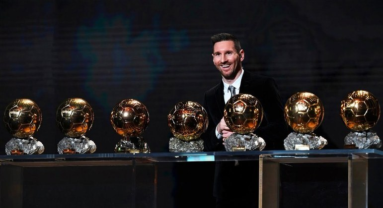

Sobre o Site
.
AQUI VOCE VAI CONHECER UM POUCO MAIS DA HISTÓRIA DE MESSI.Sobre o autor: Esta cursando o 2 ano do ensino medio.
.
INFÂNCIA
nascido em 24 de junho de 1987, na cidade de Rosário, Argentina, é amplamente reconhecido como um dos maiores jogadores de futebol da história. Messi cresceu em uma família de classe média em Rosário, onde começou a jogar futebol nas ruas da cidade. Seu talento precoce não passou despercebido, e aos 13 anos, ele mudou-se para Barcelona para ingressar na La Masia, a academia juvenil do FC Barcelona. Essa mudança foi crucial para o desenvolvimento de sua carreira, pois Messi rapidamente se destacou nas categorias de base, impressionando a todos com sua agilidade, habilidade com a bola e instintos de artilheiro.
Trajetória
Sua estreia pelo time principal do Barcelona ocorreu em 2004, quando tinha apenas 17 anos. A partir desse momento, Messi começou a forjar sua lenda no clube catalão, contribuindo significativamente para uma era de sucesso sem precedentes. A relação de Messi com o Barcelona durou mais de duas décadas, mas em agosto de 2021, devido a questões financeiras e contratuais, o jogador deixou o clube que o viu crescer. Messi assinou com o Paris Saint-Germain (PSG) na França, marcando o início de uma nova fase em sua carreira..
Conquistas
PELO BARCELONA FORAM:
4x Champions League (2005/06, 2008/09, 2010/11 e 2014/15),
3x Mundial de Clubes (2009, 2011 e 2015),
3x Supercopa da Europa (2009, 2011 e 2015),
10x Campeonato Espanhol (2004/05, 2005/06, 2008/09, 2009/10, 2010/11, 2012/13, 2014/15, 2015/16, 2017/18 e 2018/19
7x Copa do Rei (2008/09, 2011/12, 2014/15, 2015/16, 2016/17, 2017/18 e 2020/21)
7x Supercopa da Espanha (2006, 2009, 2010, 2011, 2013, 2016 e 2018).
PELA ARGENTINA :
1x Copa do Mundo (2022)
1x Copa América (2021)
1x Finalíssima (2022)
1x Olimpíada (2008)
PELO PARIS SAINT-GERMAIN:
2x Campeonato Francês (2021/22 e 2022/23)
1x Supercopa da França (2022)
PELO INTER MIAMI:
1x Copa das Ligas (2023)
premios individuais
Ballon d'Or: 2009, 2019, 2021, 2023 The Best FIFA: 2019, 2022 Bola de Ouro da FIFA: 2010, 2011, 2012, 2015 Melhor Jogador do Mundo pela FIFA: 2009 Prêmio Laureus do Esporte Mundial de atleta masculino do ano: 2020 e 2023 Onze d'Or: 2009, 2011, 2012 e 2018 Onze d'Argent: 2008, 2017 e 2019, 2021 Melhor Jogador do Mundo pela FIFPro: 2009, 2010, 2011, 2012, 2015, 2019 Melhor Jogador do Mundo pela revista World Soccer: 2009, 2010, 2011, 2012, 2015 e 2019[7] Melhor Jogador da UEFA na Europa: 2010–11, 2014–15 Chuteira de Ouro da UEFA: 2009–10, 2011–12, 2012–13, 2016–17, 2017–18, 2018–19 Melhor jogador de clubes da UEFA: 2008–09 Atacante do ano da UEFA: 2008–09, 2018–19 Jogador do Ano da Argentina: 2005, 2007, 2008, 2009, 2010, 2011, 2012, 2013, 2015, 2016, 2017, 2019, 2020, 2021,2022 Olímpia de Oro - Atleta Argentino do Ano: 2011, 2021 e 2022 Melhor atleta Argentino da década: (2011–2020) Melhor Jogador Jovem do Mundo pela FIFPro: 2006, 2007, 2008 Melhor Jogador Jovem do Mundo pela revista World Soccer: 2006, 2007, 2008, 2009 Melhor Jogador do Mundo pela Eurosport:2007, 2008, 2009, 2010, 2011, 2012, 2014, 2015 e 2019[8] Melhor Jogador do Mundo pela Goal 50: 2009, 2010, 2011, 2012, 2013, 2015, 2019 e 2021[9] Melhor jogador do mundo pela FourFourTwo: 2009, 2010, 2011, 2012, 2015, 2017, 2018 e 2019[10] Melhor jogador do ano pelo The Guardian: 2012, 2013, 2015, 2017, 2019 e 2022[11] Melhor jogador do mundo pela Sky Sports: 2015 , 2016 e 2019[12][13] Jogador do ano pelo Marca: 2018 [14] Melhor jogador da história do Espanhol pela CIHEFE[15] Jogador do ano pela Globe Soccer Awards: 2015[16] Jogador do ano pela revista L'Équipe: 2011[17][18] Golden Boy: 2005 Trofeo Bravo: 2007 Trofeu Aldo Rovira: 2009–10, 2011–12, 2012–13, 2014–15, 2016–17 e 2017–18[19] Don Balón - Melhor jogador estrangeiro: 2007, 2009, 2010 Troféu EFE: 2007, 2009, 2010, 2011 e 2012. Trofeo Alfredo Di Stéfano: 2008–09, 2009–10, 2010–11, 2014–15, 2016–17 e 2017–18, 2018–19 Troféu Pichichi: 2009–10, 2011–12, 2012–13, 2016–17, 2017–18, 2018–19, 2019–20, 2020–21 Melhor Atleta Eleito pela ESPY Awards: 2012 e 2015[20][21] Melhor Atacante do ano pela ESPN: 2018[22] Prêmios LFP (Melhor Jogador La Liga): 2008–09, 2009–10, 2010–11, 2011–12, 2012–13 e 2014–15 Mundo Deportivo (Melhor Jogador La Liga): 2017-18, 2018-19, 2019-20 Jogador do Mês La Liga: Janeiro de 2016, Abril de 2017, Abril de 2018, Setembro de 2018, Março de 2019, Novembro de 2019, Fevereiro de 2020, Fevereiro de 2021 Melhor atacante da La Liga 2008–09, 2009–10, 2010–11, 2011–12, 2012–13, 2014–15, 2015–16 Melhor gol da UEFA: 2014–15, 2015–16, 2018–19 Melhor gol da UEFA por analistas: 2019–20 Melhor jogador da história: Revista Sports Illustrated[23], Revista Voetbal International[24][25]. Gol mais bonito da história do Barcelona: 2006/07 - semifinal da Copa do Rei contra o Getafe Melhor artilheiro por um único clube na história do Futebol (IFFHS): 672 Gols por Barcelona Melhor marcador do mundo pela IFFHS: 2012, 2016 Melhor marcador internacional do mundo pela IFFHS: 2011, 2012 Melhor marcador dos campeonatos de primeira divisão do mundo pela IFFHS: 2012, 2013, 2017, 2018 Melhor criador de jogadas do mundo pela IFFHS: 2015, 2016, 2017, 2019, 2022 Melhor jogador da CONMEBOL pela IFFHS: 2020, 2021, 2022 Melhor jogador da década pela IFFHS: (2011–2020) Melhor criador de jogadas da década pela IFFHS: (2011–2020) Melhor marcador nacional da década pela IFFHS: (2011–2020)

Entre em Contato
Se você tiver alguma dúvida ou quiser compartilhar seu interesse pela história do Brasil, não hesite em nos contatar.